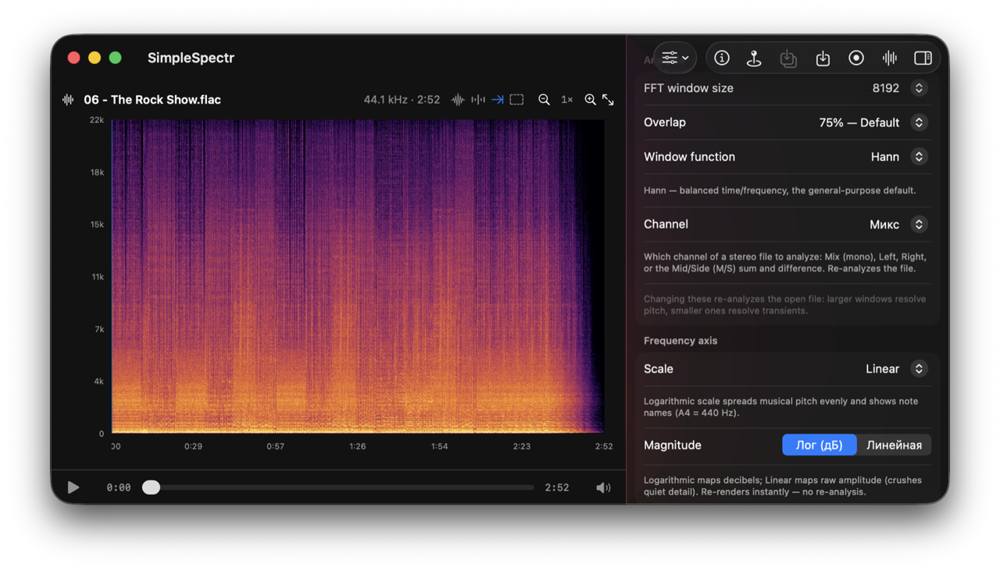
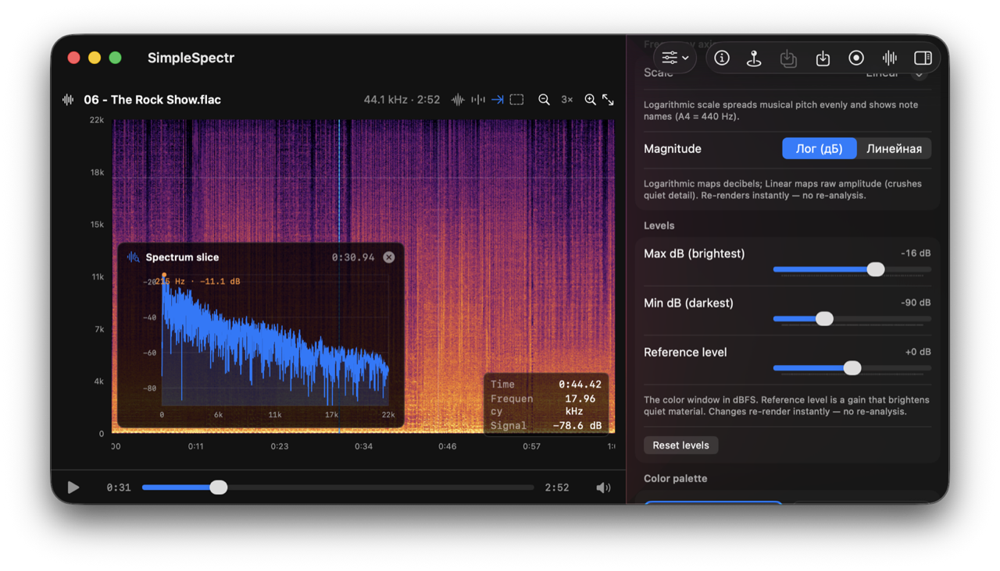

অডিও স্পেকট্রোগ্রাম for macOS
স্পেকট্রোগ্রাম দেখতে, পরিমাপ করতে এবং রপ্তানি করতে একটি বিনামূল্য অ্যাপ।


স্পেকট্রোগ্রাম পড়তে আপনার যা যা দরকার
পেশাদার-স্তরের টুল — বিনামূল্যে, একটি নেটিভ Mac অ্যাপে।
সঠিক FFT বিশ্লেষণ
Short-Time Fourier Transform with a Hann window and amplitude normalization, computed via Apple's Accelerate (vDSP). Hover reports true dBFS values.
৫টি ফ্রিকোয়েন্সি স্কেল
Linear, Logarithmic (with note names, A4 = 440 Hz), Mel, Bark, and ERB. Each perceptual scale warps the rows so labels and image always agree.
চ্যানেল মোড
Analyze stereo as Mix (mono down-mix), Left, Right, or Mid/Side (M/S) sum and difference — derived with vDSP.
লাইভ মাইক্রোফোন ইনপুট
Record from the mic and watch a full-screen spectrogram build in real time. The captured FLAC is reopened through the full analysis path.
পরিমাপ অঞ্চল
Drag a rectangle for instant Δ-time, Δ-frequency, musical interval, and true-amplitude stats: RMS, sample peak dBFS, 4× oversampled true peak dBTP, and BS.1770 LUFS.
স্পেকট্রাম স্লাইস
Double-click any moment to pop a 1-D amplitude-vs-frequency plot of that exact STFT column — handy for reading peaks and spectral shape.
হারমোনিক কার্সার
Overlay faint guide lines at the overtone series (2×, 3×, 4×…) above the frequency under the cursor to separate pitched content from noise.
ওয়েভফর্ম ওভারভিউ
A time-domain amplitude lane above the spectrogram, locked to the same time axis and zoom, so you can see dynamics alongside frequency.
হোভার ক্রসহেয়ার পড়া
Move the cursor anywhere to read the exact time, frequency, and signal level (dB) at that point, without re-reading pixels.
ডেটা রপ্তানি
Export the actual STFT magnitudes as CSV or JSON, save the rendered image as PNG, or dump your markers — with range and format options.
৭টি প্রত্যক্ষ কালারম্যাপ
Inferno, Viridis, Magma, Plasma, Turbo, Cividis, and Grayscale — interpolated in Oklab space, with live previews and adjustable dB window.
প্লেব্যাক ও সিঙ্ক
A bottom player plays the file, a synced playhead moves across the spectrogram, click-and-drag seeks, and the view auto-scrolls to follow playback.
মার্কার ও জুম
Drop labelled markers on the timeline, stretch the plot horizontally with time zoom, and reopen recent files across launches.
মেমরিতে হালকা
Audio is decoded and analyzed as a stream, never held in full — so even very long files render without running out of memory.
১৪টি ভাষা
English, Russian, German, Spanish, French, Italian, Japanese, Korean, Chinese (Simplified), Portuguese (Brazil), Hindi, Arabic, Bengali, and Turkish.
কীভাবে কাজ করে
Audio is decoded with Core Audio and streamed through the analyzer, so long files never sit fully in memory. It's mixed down to mono and transformed via a short-time Fourier transform (Hann window + real FFT) using Accelerate's vDSP. The one-sided spectrum is amplitude-normalized and window-corrected, magnitudes are converted to dB, and mapped through a perceptual colormap into a crisp image — low frequencies at the bottom, high at the top, time advancing left to right.